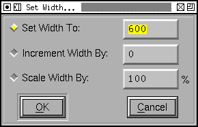

The Metrics Menu
This menu is not present in the Bitmap View, and the Metrics
View only contains "Center in Width" and "Thirds in Width".
- Center in Width
-
In the Outline and Metrics Views this centers the current
glyph (makes its lbearing be the same as its rbearing)
within the current width.
In the Font View the same thing is done for all selected
glyphs.
- Thirds in Width
- This is very like Center in Width above... except that I
happen to prefer having a bit more white space after my
glyphs than before them. So this command makes the rbearing
twice the lbearing (instead of making them be the same).
- Window Type
-
In the Metrics View, the window may behave in different
ways.
- Kerning
Only
- This metrics view may only be used to adjust
kerning
- Advance Width
Only
- This metrics view may only be used to adjust the
advance widths of glyphs
- Both
- This metrics view will adjust either the advance
width or kerning
- Set Width...
- 
The Set Width command allows you to change the width of the
current glyph (in the outline view) or all selected glyphs
(in the font view). You may either set the width to an
absolute value, change the width by adding a constant value
to it, or multiply it by a scale factor. Normally the width
will be expressed in em-units, but in a bitmap only font the
width will be expressed as pixels in the current displayed
font.
- Set LBearing...
- The Set LBearing command is similar to the Set Width
command above, the dialog is pretty much the same except that
it applies to the left side bearing rather than to the
width.
- Set RBearing...
- The Set RBearing command is similar to the Set Width
command above, the dialog is pretty much the same except that
it applies to the right side bearing rather than to the
width.
- Auto Width...
- This command is only available in the font view. It attempts to guess reasonable
values for the widths (more accurately the left and right
bearings) of the specified glyphs.
- Kern By
Classes...
- This command is only available from the font and metrics
views. It provides the user with a dialog to manipulate kerning
classes.
- Remove All Kern
Pairs
- In the font view removes all kern pairs (and kern
classes) in the font.
In the outline glyph view removes all kern pairs where the
current glyph is the left hand glyph.
Not present in the Metrics or Bitmap views.
- Kern Pair
Closeup...
- (Sorry about the name, I couldn't think of a better).
Allows you to get a
look at kerning between two glyphs at different point-sizes
and to build a "Device
Table" (which allows small corrections from the standard
behavior at specified point sizes)
Not present in the Bitmap view.
- VKern By
Classes...
- This command is only available from the font and metrics
views. It provides the user with a dialog to manipulate
vertical kerning classes.
- VKern
From HKern
- This command is only available from the font and metrics
views. It removes all current vertical kerning information,
then it looks through the font and for each pair of
horizontally kerned glyphs where both have a 'vert' or 'vrt2'
feature it produces a vertical kerning pair for the vertical
versions of those glyphs. (That is: If
A+V are horizontally kerned by -50
and A => A.vert and
V => V.vert then this command
will produce a vertical kerning pair between
A.vert + V.vert with a value of
-50)
- Remove All VKern
Pairs
- In the font view removes all vertical kern pairs (and
kern classes) in the font.
In the outline glyph view removes all kern pairs where the
current glyph is the left hand glyph.
Not present in the Metrics or Bitmap views.
- Set Vertical
Advance...
- If vertical metrics are enabled for the font this will be
active in the font and outline glyph view.
It behaves exactly like Set Width... except it works on the
vertical advance rather than the horizontal advance
(width).
Other menus
-- Prev -- TOC -- Next
--